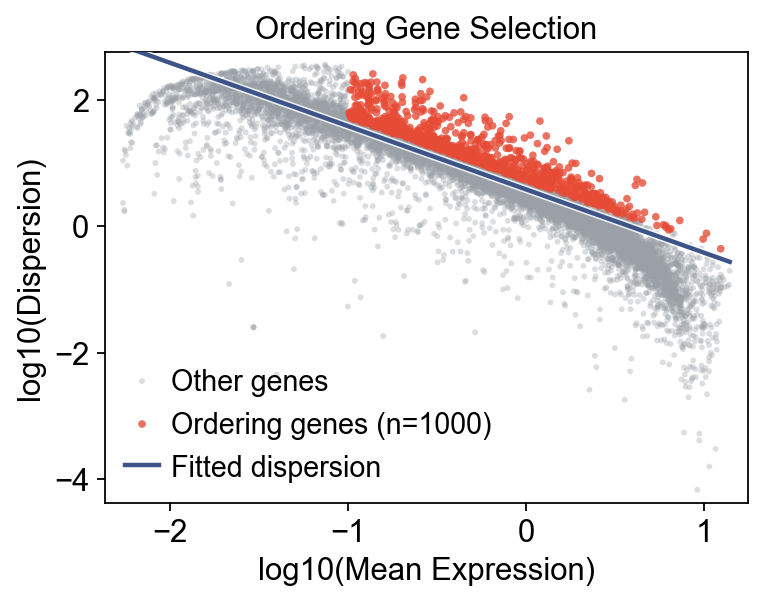
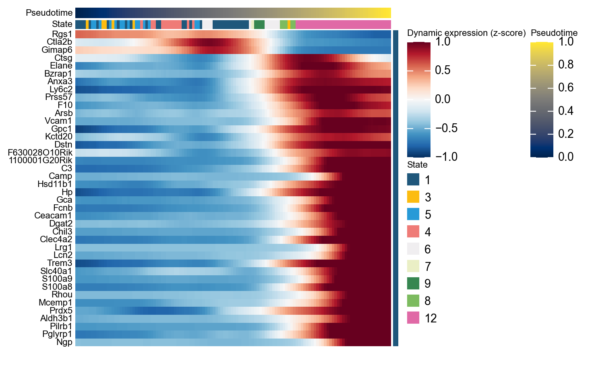
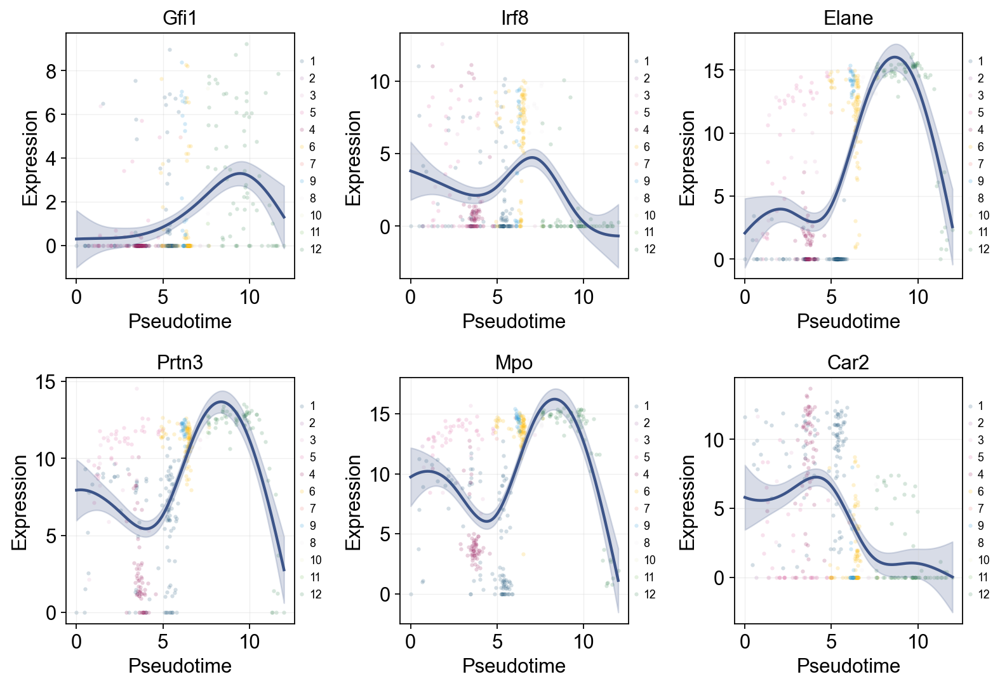
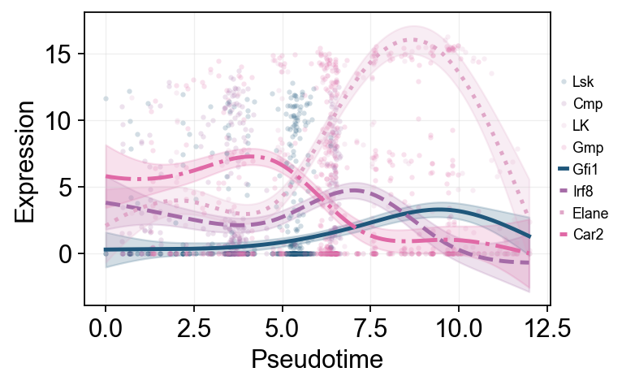
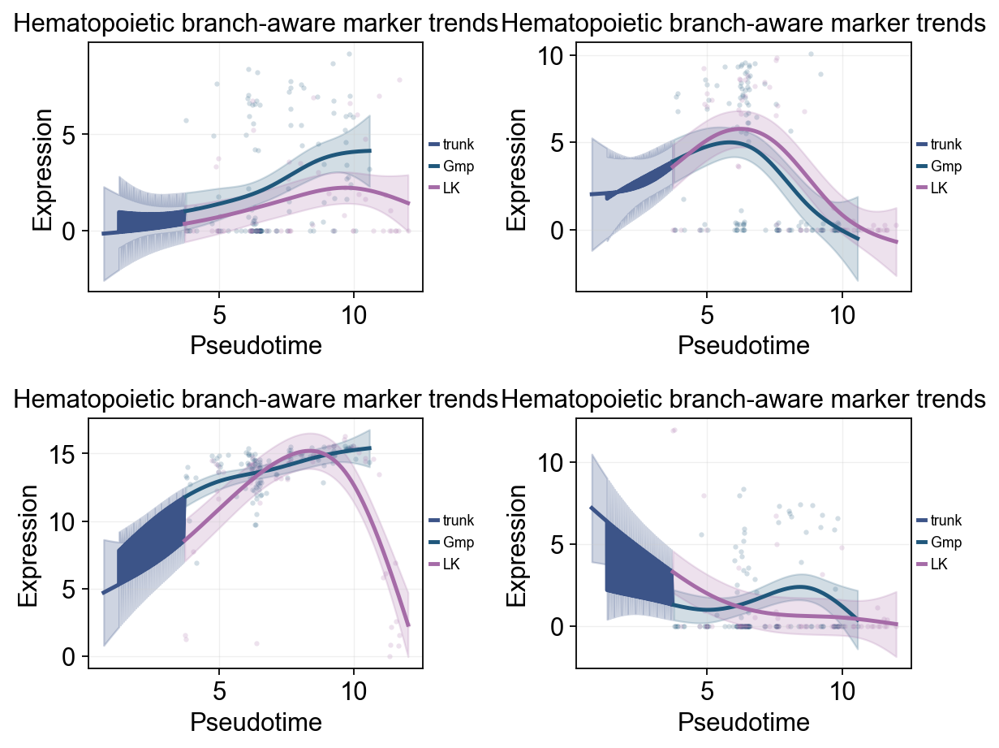
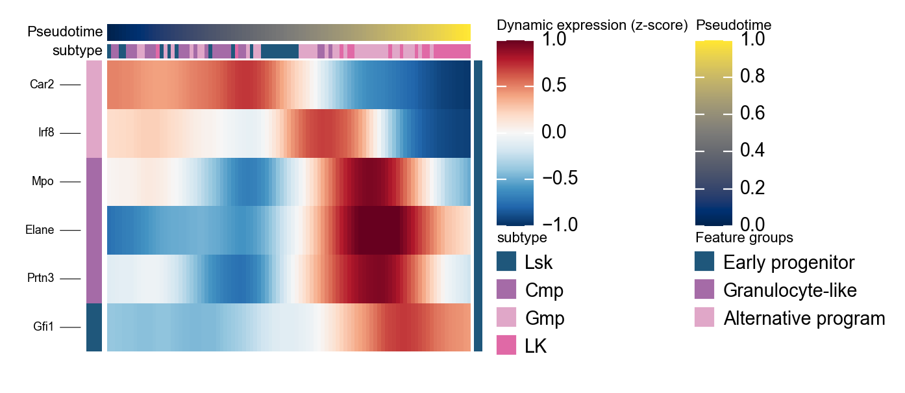
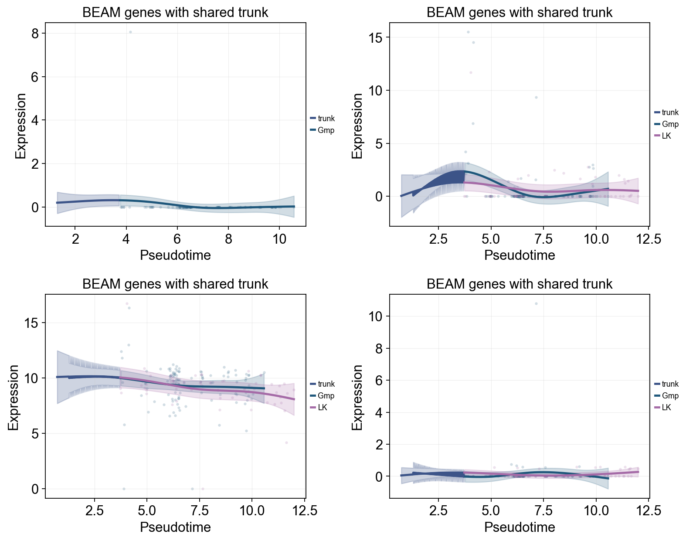

Trajectory Inference with Monocle 2#
This tutorial uses the public processed GEO GSE70245 matrix to demonstrate a Monocle 2-style analysis of Olsson hematopoietic differentiation. The workflow includes DDRTree reconstruction, branch-aware pseudotime stream plots, dynamic gene trends, dynamic heatmaps, and BEAM analysis.
from pathlib import Path
from urllib.request import urlretrieve
import warnings
warnings.filterwarnings("ignore", category=FutureWarning)
import anndata as ad
import matplotlib.pyplot as plt
import numpy as np
import pandas as pd
import omicverse as ov
from omicverse.single import Monocle
ov.plot_set(font_path='Arial')
np.random.seed(42)
%reload_ext autoreload
%autoreload 2
🔬 Starting plot initialization...
Using already downloaded Arial font from: /var/folders/rv/3jnfbs0d6r7d0c5bfj7ft5k00000gn/T/omicverse_arial.ttf
Registered as: Arial
🧬 Detecting GPU devices…
✅ Apple Silicon MPS detected
• [MPS] Apple Silicon GPU - Metal Performance Shaders available
____ _ _ __
/ __ \____ ___ (_)___| | / /__ _____________
/ / / / __ `__ \/ / ___/ | / / _ \/ ___/ ___/ _ \
/ /_/ / / / / / / / /__ | |/ / __/ / (__ ) __/
\____/_/ /_/ /_/_/\___/ |___/\___/_/ /____/\___/
🔖 Version: 2.2.1rc1 📚 Tutorials: https://omicverse.readthedocs.io/
✅ plot_set complete.
Method background#
The Monocle documentation describes trajectory inference as an ordering problem: identify genes that capture biological progression, project cells into a low-dimensional space, then learn a branching principal graph that assigns each cell both pseudotime and a discrete State. In Monocle 2, this geometry is learned by reversed graph embedding (RGE), commonly through the DDRTree interface.
References:
Data source#
This tutorial uses the public processed Olsson single-cell matrices from GEO GSE70245. The supplementary matrices provide RSEM expression values as log2(TPM + 1), together with metadata for sample groups and cell subtypes.
Download the official GEO processed expression matrices#
The Olsson GEO SuperSeries splits the single-cell data into multiple subseries. Each subseries provides a processed expression table, and the GEO metadata states that these values are RSEM log2(TPM + 1) expression values. We download these tables directly from GEO and cache them locally.
DATA_DIR = Path('data/olsson_geo')
RAW_DIR = DATA_DIR / 'raw'
RAW_DIR.mkdir(parents=True, exist_ok=True)
GEO_FILES = [
{
'acc': 'GSE70236',
'filename': 'GSE70236_Cmp.txt.gz',
'subtype': 'Cmp',
'genotype': 'WT',
'url': 'https://ftp.ncbi.nlm.nih.gov/geo/series/GSE70nnn/GSE70236/suppl/GSE70236_Cmp.txt.gz',
},
{
'acc': 'GSE70238',
'filename': 'GSE70238_GG1.txt.gz',
'subtype': 'GG1',
'genotype': 'WT',
'url': 'https://ftp.ncbi.nlm.nih.gov/geo/series/GSE70nnn/GSE70238/suppl/GSE70238_GG1.txt.gz',
},
{
'acc': 'GSE70239',
'filename': 'GSE70239_Gfi1.Null.txt.gz',
'subtype': 'Gfi1_knockout',
'genotype': 'KO',
'url': 'https://ftp.ncbi.nlm.nih.gov/geo/series/GSE70nnn/GSE70239/suppl/GSE70239_Gfi1.Null.txt.gz',
},
{
'acc': 'GSE70240',
'filename': 'GSE70240_Gmp.txt.gz',
'subtype': 'Gmp',
'genotype': 'WT',
'url': 'https://ftp.ncbi.nlm.nih.gov/geo/series/GSE70nnn/GSE70240/suppl/GSE70240_Gmp.txt.gz',
},
{
'acc': 'GSE70241',
'filename': 'GSE70241_IG2.txt.gz',
'subtype': 'IG2',
'genotype': 'WT',
'url': 'https://ftp.ncbi.nlm.nih.gov/geo/series/GSE70nnn/GSE70241/suppl/GSE70241_IG2.txt.gz',
},
{
'acc': 'GSE70242',
'filename': 'GSE70242_Irf8.Null.txt.gz',
'subtype': 'Irf8_knockout',
'genotype': 'KO',
'url': 'https://ftp.ncbi.nlm.nih.gov/geo/series/GSE70nnn/GSE70242/suppl/GSE70242_Irf8.Null.txt.gz',
},
{
'acc': 'GSE70243',
'filename': 'GSE70243_LK.CD34+.txt.gz',
'subtype': 'LK',
'genotype': 'WT',
'url': 'https://ftp.ncbi.nlm.nih.gov/geo/series/GSE70nnn/GSE70243/suppl/GSE70243_LK.CD34%2B.txt.gz',
},
{
'acc': 'GSE70244',
'filename': 'GSE70244_Lsk.txt.gz',
'subtype': 'Lsk',
'genotype': 'WT',
'url': 'https://ftp.ncbi.nlm.nih.gov/geo/series/GSE70nnn/GSE70244/suppl/GSE70244_Lsk.txt.gz',
},
]
for item in GEO_FILES:
target = RAW_DIR / item['filename']
if not target.exists():
print(f"Downloading {item['acc']} -> {target.name}")
urlretrieve(item['url'], target)
else:
print(f"Using cached file: {target.name}")
Using cached file: GSE70236_Cmp.txt.gz
Using cached file: GSE70238_GG1.txt.gz
Using cached file: GSE70239_Gfi1.Null.txt.gz
Using cached file: GSE70240_Gmp.txt.gz
Using cached file: GSE70241_IG2.txt.gz
Using cached file: GSE70242_Irf8.Null.txt.gz
Using cached file: GSE70243_LK.CD34+.txt.gz
Using cached file: GSE70244_Lsk.txt.gz
Merge GEO subseries into analysis tables#
For a cleaner downstream workflow, the downloaded GEO files are organized into one expression matrix and one metadata table. We also keep whether each cell belongs to the WT or KO condition.
MERGED_EXPR = DATA_DIR / 'olsson_geo_log2_tpm_613cells.tsv.gz'
MERGED_META = DATA_DIR / 'olsson_geo_metadata_613cells.csv'
def read_geo_matrix(path: Path) -> pd.DataFrame:
return pd.read_csv(path, sep=' ', index_col=0, compression='gzip')
if not MERGED_EXPR.exists() or not MERGED_META.exists():
matrices = []
metadata_rows = []
for item in GEO_FILES:
df = read_geo_matrix(RAW_DIR / item['filename'])
matrices.append(df)
metadata_rows.append(
pd.DataFrame(
{
'cell_id': df.columns,
'subtype': item['subtype'],
'genotype': item['genotype'],
'geo_accession': item['acc'],
'value_type': 'log2(TPM+1) RSEM',
}
)
)
merged_expr = pd.concat(matrices, axis=1)
merged_meta = pd.concat(metadata_rows, axis=0, ignore_index=True)
merged_expr.to_csv(MERGED_EXPR, sep=' ', compression='gzip')
merged_meta.to_csv(MERGED_META, index=False)
else:
merged_expr = pd.read_csv(MERGED_EXPR, sep=' ', index_col=0, compression='gzip')
merged_meta = pd.read_csv(MERGED_META)
print(f'Merged matrix: {merged_expr.shape[0]} genes x {merged_expr.shape[1]} cells')
merged_meta.head()
Merged matrix: 23955 genes x 613 cells
cell_id subtype genotype geo_accession value_type
0 Cmp.1 Cmp WT GSE70236 log2(TPM+1) RSEM
1 Cmp.2 Cmp WT GSE70236 log2(TPM+1) RSEM
2 Cmp.3 Cmp WT GSE70236 log2(TPM+1) RSEM
3 Cmp.4 Cmp WT GSE70236 log2(TPM+1) RSEM
4 Cmp.5 Cmp WT GSE70236 log2(TPM+1) RSEM
Build an AnnData object#
The expression matrix uses GEO-provided log2(TPM + 1) values, while metadata is used for grouping, trajectory analysis, and visualization.
merged_expr = pd.read_csv(MERGED_EXPR, sep=' ', index_col=0, compression='gzip')
merged_meta = pd.read_csv(MERGED_META).set_index('cell_id')
adata = ad.AnnData(X=merged_expr.T.astype(np.float32))
adata.obs = merged_meta.loc[merged_expr.columns].copy()
adata.var['gene_short_name'] = merged_expr.index.astype(str)
adata.var_names = merged_expr.index.astype(str)
adata
AnnData object with n_obs × n_vars = 613 × 23955
obs: 'subtype', 'genotype', 'geo_accession', 'value_type'
var: 'gene_short_name'
Focus on the WT hematopoietic backbone#
The main analysis uses WT Lsk, Cmp, Gmp, and LK cells.
wt_types = ['Lsk', 'Cmp', 'Gmp', 'LK']
adata_wt = adata[adata.obs['subtype'].isin(wt_types)].copy()
print(f'WT cells: {adata_wt.n_obs}')
adata_wt.obs['subtype'].value_counts()
WT cells: 394
subtype
Gmp 136
Cmp 96
Lsk 96
LK 66
Name: count, dtype: int64
Monocle preprocessing and ordering-gene selection#
We use the OmicVerse ordering-gene selection step to identify informative genes that capture hematopoietic progression, then learn the trajectory geometry from them.
mono = Monocle(adata_wt)
mono.preprocess()
mono.select_ordering_genes(max_genes=1000)
print(f"Ordering genes: {mono.adata.var['use_for_ordering'].sum()}")
mono.plot_ordering_genes(figsize=(5, 4))
plt.show()
Ordering genes: 1000
{kind=link}

Learn the DDRTree trajectory and calculate pseudotime#
We keep Monocle 2-style settings: learn the trajectory in a 4-dimensional space, then place the root in the Lsk population.
mono.reduce_dimension(max_components=4, verbose=False)
mono.order_cells(root_by_column='subtype', root_by_value='Lsk')
print(mono)
[monocle2_py] Using fast DDRTree (≈3× speed-up, pseudotime correlation with R ≥ 0.99). Pass method='exact' for bitwise R Monocle 2 parity.
Monocle(394 cells × 23955 genes)
preprocessed: ✓
ordering genes: 1000
reduced: DDRTree
ordered: pseudotime [0.00, 11.99], 12 states
ov.pl.trajectory(
mono.adata,
method='monocle',
basis='X_DDRTree',
color='subtype',
figsize=(3.5,3),
)
ov.plt.show()
{kind=link}
ov.pl.trajectory(
mono.adata,
method='monocle',
basis='X_DDRTree',
color='State',
figsize=(3.5,3),
)
ov.plt.show()
{kind=link}
OV trajectory graph and projection views#
The same Monocle result can also be displayed through the unified trajectory_graph and trajectory_projection APIs used by the other trajectory tutorials.
fig, ax = ov.pl.trajectory_graph(
mono.adata,
method='monocle',
basis='X_DDRTree',
color='subtype',
figsize=(3,3),
)
ov.plt.show()
{kind=link}
Overlay the trajectory on the DDRTree embedding#
ov.pl.trajectory_overlay overlays the gray principal graph and branch-point labels on an existing OmicVerse embedding axis, keeping cell colors and legends consistent with ov.pl.embedding.
fig, ax = ov.plt.subplots(figsize=(4, 4))
ov.pl.embedding(
mono.adata,
basis='X_DDRTree',
color='subtype',
ax=ax,
show=False,
size=100,
)
ov.pl.trajectory_overlay(mono.adata, ax=ax, method='monocle')
ov.plt.show()
{kind=link}
Complex tree layout#
When the main goal is to inspect progression along pseudotime, a tree layout can be easier to read than the default low-dimensional scatter plot. Here it separates the early progenitor backbone from downstream branches.
ov.pl.trajectory_tree(
mono.adata,
method='monocle',
color='subtype',
figsize=(4,3),
)
ov.plt.show()
{kind=link}
Relationship between State and subtype#
A simple contingency heatmap checks whether Monocle states broadly follow the expected Lsk -> Cmp/LK -> Gmp direction.
state_subtype = pd.crosstab(mono.adata.obs['State'], mono.adata.obs['subtype'])
state_subtype_norm = state_subtype.div(state_subtype.sum(axis=1), axis=0)
fig, ax = plt.subplots(figsize=(2, 4))
im = ax.imshow(state_subtype_norm.values, aspect='auto', cmap='Greys')
ax.set_xticks(range(state_subtype_norm.shape[1]))
ax.set_xticklabels(state_subtype_norm.columns, rotation=30, ha='right')
ax.set_yticks(range(state_subtype_norm.shape[0]))
ax.set_yticklabels(state_subtype_norm.index)
ax.set_xlabel('Subtype')
ax.set_ylabel('State')
ax.set_title('State / subtype correspondence')
plt.colorbar(im, ax=ax, fraction=0.03, pad=0.04)
plt.show()
{kind=link}
Branch-oriented pseudotime stream plot#
ov.pl.branch_streamplot turns Monocle pseudotime and subtype densities into a river-style plot. Compared with the 2D Monocle layout, this view makes it easier to see where the early hematopoietic backbone narrows and where downstream subtype branches expand. Ribbon width represents relative subtype abundance at each pseudotime position.
fig, ax = ov.pl.branch_streamplot(
mono.adata,
group_key='subtype',
pseudotime_key='Pseudotime',
show=False,
)
plt.show()
{kind=link}
Genes varying along pseudotime#
Before focusing on branch-specific behavior, we first inspect genes that vary most strongly over the whole hematopoietic progression.
ordering_genes = mono.adata.var_names[mono.adata.var['use_for_ordering']].tolist()
mono_ord = Monocle(mono.adata[:, ordering_genes].copy())
de = mono_ord.differential_gene_test(cores=-1)
sig = de[(de['qval'] < 0.01) & (de['status'] == 'OK')]
top40 = sig.sort_values('pval').head(40).index.tolist()
g = ov.pl.dynamic_heatmap(
mono.adata,
pseudotime='Pseudotime',
var_names=top40,
cell_annotation='State',
use_cell_columns=False,
use_fitted=True,
cell_bins=200,
figsize=(7, 7),
show_row_names=True,
standard_scale='var',
cmap='RdBu_r',
order_by='peak',
show=False,
)
🔍 Dynamic heatmap:
Candidate features: 40
Pseudotime: Pseudotime
Cell annotation: State
use_fitted=True | cell_bins=200 | cmap=RdBu_r
✅ Dynamic heatmap completed!
✓ Matrix shape: 40 features × 122 columns
{kind=link}

Representative marker genes along pseudotime#
Classic hematopoietic markers provide a direct biological sanity check. If the pseudotime is reasonable, early progenitor markers and later branch markers should appear in an interpretable order.
Single-line Global Trends#
Each marker is fitted with one global trend line, while raw points are colored by Monocle-inferred State. This helps distinguish global pseudotime trends from state-driven cell distributions.
import pandas as pd
marker_genes = [g for g in ['Gfi1', 'Irf8', 'Elane', 'Prtn3', 'Mpo', 'Car2'] if g in mono.adata.var_names]
res = ov.single.dynamic_features(
mono.adata,
genes=marker_genes,
pseudotime='Pseudotime',
store_raw=True,
raw_obs_keys=['State'],
)
ov.pl.dynamic_trends(
res,
genes=marker_genes,
add_point=True,
point_color_by='State',
figsize=(4, 3.5),
legend_loc='right margin',
legend_fontsize=8,
)
plt.show()
🔍 Dynamic feature analysis:
Views: 1 | Features: 6
Pseudotime: Pseudotime
Stored raw obs keys: ['State']
GAM: normal-identity | splines=8
✅ Dynamic feature analysis completed!
✓ Successful fits: 6/6
✓ Fitted rows: 1200
✓ Raw observations stored: 2364
🔍 Dynamic trend plotting:
Features: 6 | Groups: 1
compare_features=False | compare_groups=False
✅ Dynamic trend plotting completed!
{kind=link}

Marker dynamics with dynamic_features and dynamic_trends#
ov.single.dynamic_features fits GAM trends along Monocle pseudotime. We first draw global marker curves over the entire hematopoietic process, then refit the major downstream branches to show branch-associated expression changes.
marker_genes = [g for g in ['Gfi1', 'Irf8', 'Elane', 'Prtn3', 'Mpo', 'Car2'] if g in mono.adata.var_names]
olsson_global_dyn = ov.single.dynamic_features(
mono.adata,
genes=marker_genes,
pseudotime='Pseudotime',
use_raw=False,
distribution='normal',
link='identity',
n_splines=8,
store_raw=True,
raw_obs_keys=['subtype', 'State'],
)
trend_genes = [g for g in ['Gfi1', 'Irf8', 'Elane', 'Car2'] if g in marker_genes]
🔍 Dynamic feature analysis:
Views: 1 | Features: 6
Pseudotime: Pseudotime
Stored raw obs keys: ['subtype', 'State']
GAM: normal-identity | splines=8
✅ Dynamic feature analysis completed!
✓ Successful fits: 6/6
✓ Fitted rows: 1200
✓ Raw observations stored: 2364
ov.pl.dynamic_trends(
olsson_global_dyn,
genes=trend_genes,
compare_features=True,
add_point=True,
point_color_by='subtype',
line_style_by='features',
figsize=(6, 3.2),
linewidth=2.2,
legend_loc='right margin',
legend_fontsize=8,
)
plt.show()
🔍 Dynamic trend plotting:
Features: 4 | Groups: 1
compare_features=True | compare_groups=False
✅ Dynamic trend plotting completed!
{kind=link}

branch_subtypes = ['Gmp', 'LK']
branch_split_mask = mono.adata.obs['subtype'].astype(str).isin(['Cmp'])
olsson_branch_dyn = ov.single.dynamic_features(
mono.adata,
genes=trend_genes,
pseudotime='Pseudotime',
groupby='subtype',
groups=branch_subtypes,
use_raw=False,
distribution='normal',
link='identity',
n_splines=8,
store_raw=True,
)
branch_split_time = float(np.nanmedian(mono.adata.obs.loc[branch_split_mask, 'Pseudotime'])) if branch_split_mask.any() else float(np.nanmedian(mono.adata.obs['Pseudotime']))
🔍 Dynamic feature analysis:
Views: 2 | Features: 4
Pseudotime: Pseudotime
Grouping: subtype
GAM: normal-identity | splines=8
✅ Dynamic feature analysis completed!
✓ Successful fits: 8/8
✓ Fitted rows: 1600
✓ Raw observations stored: 808
ov.pl.dynamic_trends(
olsson_branch_dyn,
genes=trend_genes,
compare_groups=True,
split_time=branch_split_time,
shared_trunk=True,
add_point=True,
point_color_by='group',
figsize=(4.6, 3),
linewidth=2.2,
ncols=2,
legend_loc='right margin',
legend_fontsize=8,
title='Hematopoietic branch-aware marker trends',
)
plt.show()
🔍 Dynamic trend plotting:
Features: 4 | Groups: 2
compare_features=False | compare_groups=True
✅ Dynamic trend plotting completed!
{kind=link}

Summarize hematopoietic programs with dynamic_heatmap#
ov.pl.dynamic_heatmap compresses grouped marker programs into a pseudotime-ordered heatmap, making it useful for comparing activation order across programs. Early programs usually correspond to progenitor features, whereas later programs reflect downstream fate commitment.
olsson_marker = {
'Early progenitor': [g for g in ['Gfi1'] if g in mono.adata.var_names],
'Granulocyte-like': [g for g in ['Elane', 'Prtn3', 'Mpo'] if g in mono.adata.var_names],
'Alternative program': [g for g in ['Irf8', 'Car2'] if g in mono.adata.var_names],
}
olsson_marker = {k: v for k, v in olsson_marker.items() if v}
g = ov.pl.dynamic_heatmap(
mono.adata,
var_names=olsson_marker,
pseudotime='Pseudotime',
use_raw=False,
use_cell_columns=False,
cell_annotation='subtype',
cell_bins=140,
smooth_window=13,
fitted_window=25,
figsize=(5, 4),
standard_scale='var',
cmap='RdBu_r',
use_fitted=True,
border=False,
show=False,
)
🔍 Dynamic heatmap:
Candidate features: 6
Pseudotime: Pseudotime
Cell annotation: subtype
use_fitted=True | cell_bins=140 | cmap=RdBu_r
✅ Dynamic heatmap completed!
✓ Matrix shape: 6 features × 97 columns
{kind=link}

Use BEAM to identify branch-associated genes#
BEAM tests for genes whose expression trajectories diverge after a branch point. Here the most significant genes are passed to dynamic_trends to compare downstream subtype programs.
beam = mono_ord.BEAM(branch_point=1, cores=-1)
sig_beam = beam[beam['qval'] < 0.01].sort_values('qval')
print(f'BEAM significant genes: {len(sig_beam)}/{len(beam)}')
display(sig_beam.head(10)[['pval', 'qval']])
top_branch_genes = sig_beam.head(4).index.tolist()
beam_branch_subtypes = ['Gmp', 'LK']
beam_dyn = ov.single.dynamic_features(
mono.adata,
genes=top_branch_genes,
pseudotime='Pseudotime',
groupby='subtype',
groups=beam_branch_subtypes,
use_raw=False,
distribution='normal',
link='identity',
n_splines=8,
store_raw=True,
)
beam_split_mask = mono.adata.obs['subtype'].astype(str).isin(['Cmp'])
beam_split_time = float(np.nanmedian(mono.adata.obs.loc[beam_split_mask, 'Pseudotime'])) if beam_split_mask.any() else float(np.nanmedian(mono.adata.obs['Pseudotime']))
ov.pl.dynamic_trends(
beam_dyn,
genes=top_branch_genes,
compare_groups=True,
split_time=beam_split_time,
shared_trunk=True,
add_point=True,
point_color_by='group',
figsize=(6, 4),
linewidth=2.2,
ncols=2,
legend_loc='right margin',
legend_fontsize=8,
title='BEAM genes with shared trunk',
)
plt.show()
BEAM significant genes: 141/1000
🔍 Dynamic feature analysis:
Views: 2 | Features: 4
Pseudotime: Pseudotime
Grouping: subtype
GAM: normal-identity | splines=8
✅ Dynamic feature analysis completed!
✓ Successful fits: 7/8
✓ Fitted rows: 1400
✓ Raw observations stored: 742
🔍 Dynamic trend plotting:
Features: 4 | Groups: 2
compare_features=False | compare_groups=True
✅ Dynamic trend plotting completed!
pval qval
uid
Gm6289 0.0 0.0
Gm20753 0.0 0.0
Gm20594 0.0 0.0
Gm20172 0.0 0.0
Gm15880 0.0 0.0
Satb2 0.0 0.0
Gm10408 0.0 0.0
Gcm1 0.0 0.0
Gal3st3 0.0 0.0
Rn45s 0.0 0.0
{kind=link}
